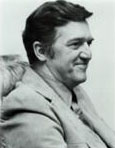
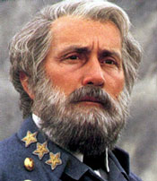
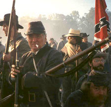

|
Michael Shaara's Killer Angels possesses the
attributes of a novel destined for cinematic treatment. A
Pulitzer Prize-winning exploration of the most famous battle
in American history, it employs compelling biographical
|

Michael Shaara
|
sketches of Robert E. Lee, James Longstreet, Joshua
Chamberlain, and other historical figures to illuminate the
Gettysburg campaign. Ken Burns credited the novel with
persuading him to make his documentary about the Civil War;
teachers at the secondary and university levels have found
that students have not only read but also enjoy Killer
Angels, and the book-buying public has devoured nearly
fifty printings in hardcover and softcover. Ronald E.
Maxwell read the novel in 1978, soon acquired the movie
rights, and spent years attempting to find financial backing
for a film. Following the overwhelming success of Burns's
PBS series in 1990, Ted Turner joined forces with Maxwell to
translate Shaara's novel into a television movie. Turner
eventually decided to edit the film for theatrical release
in 1993 before airing a longer version on his TNT network in
July 1994.
Retitled Gettysburg, the film effectively conveys
the look of Civil War armies and the landscape across which
they campaigned. More than three thousand reenactors
participated in the sprawling production, ensuring that
uniforms and accoutrements would be correct. Forty pieces of
artillery worked by full crews enabled Maxwell, through
carefully selected camera angles, to suggest the scale of
the bombardment that preceded the Pickett-Pettigrew assault.
The scenes depicting combat on Little Round Top, the
climactic Confederate assault on July 3, and other action
are quite vivid. Because the film initially was shot for
television, however, bodies fly through the air when struck
by cannon fire, and soldiers fall in heaps without any
accompanying gore. Maxwell could not match the realistic
depiction of carnage in the Antietam sequence of
Glory, which remains the standard against which
representations of Civil War combat should be judged. The
southern Pennsylvania countryside where Maxwell shot
virtually the entire film has a wonderfully lush, unspoiled
look that calls to mind the admiring remarks of Confederates
who marveled that any area could thrive so bountifully in
the midst of war. Scenes filmed at the Spangler farm and
elsewhere on the battlefield add a special touch of
verisimilitude.
Maxwell's script follows Shaara's text very closely,
focusing almost exclusively on Union and Confederate
officers and their soldiers. Absent are the black men who
played noncombatant roles in both armies and the male and
|

Martin Sheen as Robert E. Lee
|
female civilians who brushed against the opposing forces.
Civil War buffs disappointed with inaccuracies in the film
should remember that Gettysburg is based on a novel.
For example, Lee's main objective in crossing the Potomac
was not "to draw the Union army out into the open where it
[could] be destroyed,:" but Shaara makes that statement in
his foreword and it appears in the film's prologue. Harsh
appraisals of Martin Sheen's portrayal of Lee also might
better be directed toward the author. Shaara's Lee is tired
and ill at Gettysburg, seemingly resigned to leaving
everything in God's hands once the battle opens. Twice shown
in a rocking chair in Gettysburg, once with an aide
carefully placing a blanket over him as he slumps with
fatigue, Lee remarks as early as June 30 that "all [is] in
God's hands now." In fairness to Shaara, it must be added
that his book explains far better than the movie the
characteristics and accomplishments that propelled Lee to
military renown and inspired deep devotion in his soldiers.
As an interpretation of a landmark in American military
history, the movie is by turns revisionist and conventional.
Longstreet holds center stage on the Confederate side as a
modem warrior who knows the value of defensive fighting and
tries repeatedly to convince Lee to abandon offensive
tactics. The sulking subordinate so often sketched in
historical literature makes no appearance, nor does
Maxwell's script contain any hint of the tenacious
controversy surrounding Longstreet's performance on July 2.
In contrast, the depictions of Richard S. Ewell, Jeb Stuart,
John Buford, and other officers adhere strictly to popular
conceptions. Although recent scholarship denies almost
unanimously that Gettysburg was the watershed of the war,
the script understandably argues for the battle's
decisiveness. "I think if we lose this fight," states
Chamberlain in a typical moment, "we lose the war."
Away from action on the battlefield, the film's
characters discuss their motivations in going to war. These
scenes likely will provoke debate among professional
historians. The institution of slavery is muted in
Confederate discussions, while the Northern soldiers,
represented by Joshua Chamberlain and his younger brother
Tom, stress the goal of freedom. When Tom Chamberlain asks
three captured Confederates why they fight, a Tennessee
yeoman responds, "I don't know about some other folk, but I
ain't fightin' for no darkies one way or the other. I'm
fightin' for my rights [pronounced 'rats']. All of us here,
that's what we're fightin' for." Why can't the North just
"live and let live?" wonders the Tennessean. James L.
Kemper, a Virginia politician commanding a brigade in George
E. Pickett's division, similarly plays down the importance
of slavery: "What we are fighting for here is freedom from
what we consider to be the rule of a foreign power ...
That's what this war is all about." The "damn money-grubbing
Yankees" adds Kemper bitterly, talk about "the darkies,
nothing but the darkies," In a scene on the morning of July
2, Lee and Longstreet agree that they resigned their United
States commissions only because they could not countenance
fighting against their families.
Freedom and Union--in that order--motivate the Federals
in Gettysburg. Tom Chamberlain assures the Confederate
prisoners that his army fights "to free the slaves, of
course" and "to preserve the Union." Joshua Chamberlain
describes the Army of the Potomac as virtually unique in
history, seeking not plunder or power but "to set other men
free. America should be free ground, all of it." For
Chamberlain, all men, regardless of race or nationality,
have value: "What we are fighting for, in the end, we are
fighting for each other." An Irish-born sergeant, Buster
Kilrain of Chamberlain's Twentieth Maine, believes that
"what matters is justice, which is why I'm here. I'll be
treated as I deserve, not as my father deserved." Damning
all gentlemen, Kilrain insists that freedom to achieve the
potential of every individual's mind counts more than
anything else: "And that's why we've got to win this war."
The shared heritage and essential similarity of Federals
and Confederates forms a leitmotiv in the film. Winfield
|

Reenactors were utlized heavily
in the production of Gettysburg.
|
Scott Hancock and Lewis A. Armistead, opponents at
Gettysburg, dwell at length on their friendship forged in
the prewar United States army. Longstreet expands on this
theme in confessing to Lee on July 2 that the Federals never
quite seem to be the enemy; after all, Longstreet fought
with many of them in Mexico. Lee agrees but urges Longstreet
to do his duty--that is "God's will." Just before Pickett's
division begins its famous assault, Armistead discusses the
composition of his brigade with the British observer A.J.L.
Fremantle, linking his men to Patrick Henry, John Tyler, and
other famous figures of the American past. Longstreet also
points out to Fremantle that Americans from North and South
had defeated the British in a pair of earlier wars. Tom
Chamberlain and his Confederate prisoners share a wish for
the war to end, taking leave of each other with an almost
affectionate exchange. "See you in hell, Billy Yank," a
prisoner tells Chamberlain. "See you in hell, Johnny Reb,"
replies the lieutenant. After the battle, Lee implies that
whatever differences brought the conflict probably were
superficial, musing to Longstreet: "And does it matter after
all who wins? Was that ever really the question? Will
Almighty God ask that question in the end?"
As a dramatic interpretation of a famous event,
Gettysburg offers spectacle, careful attention to details of
nineteenth-century military material culture, and ample
opportunity for scholars to debate the matching of actors to
historical characters, the representation of Union and
Confederate motivations, and other issues. Its length
militates against use in the classroom, but anyone who has
read and enjoyed Shaara's novel should view the film at
least once.
Source: Gary W. Gallagher in the
Journal of American History, 81:3 (December
1994), 1398-1400.
|